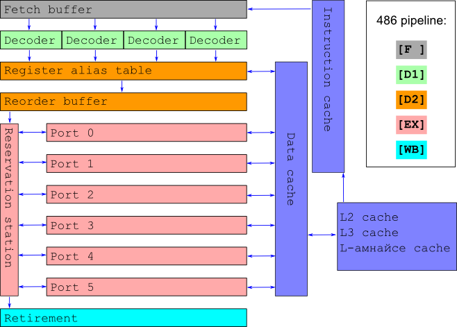
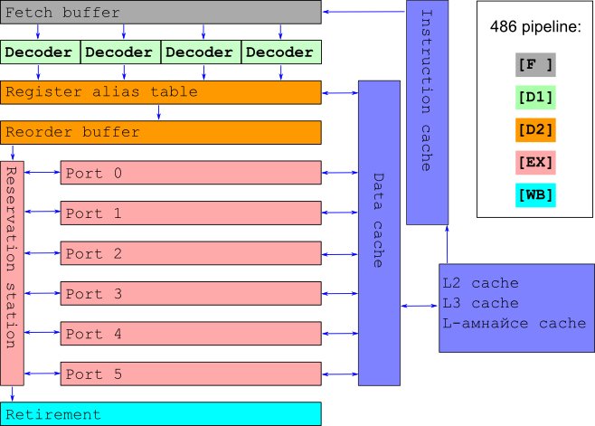
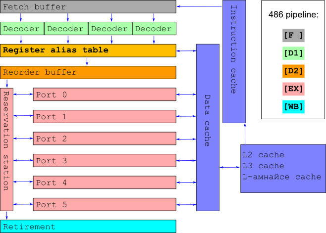
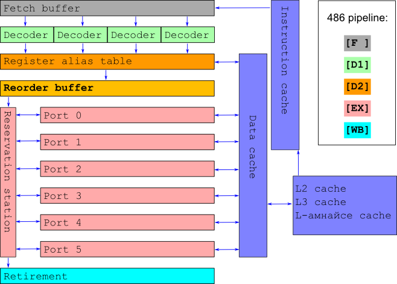
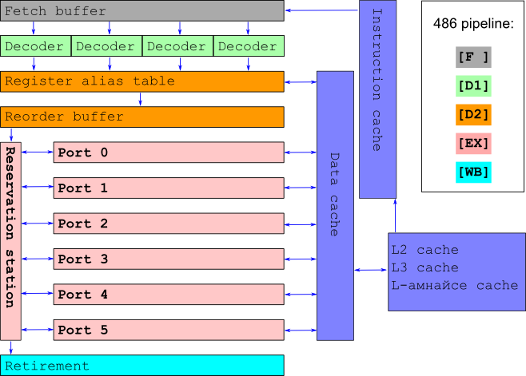
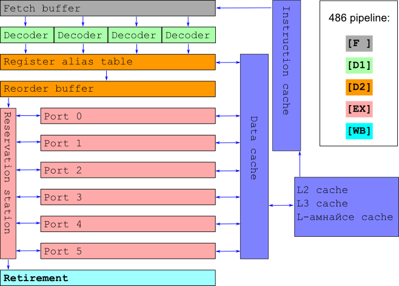
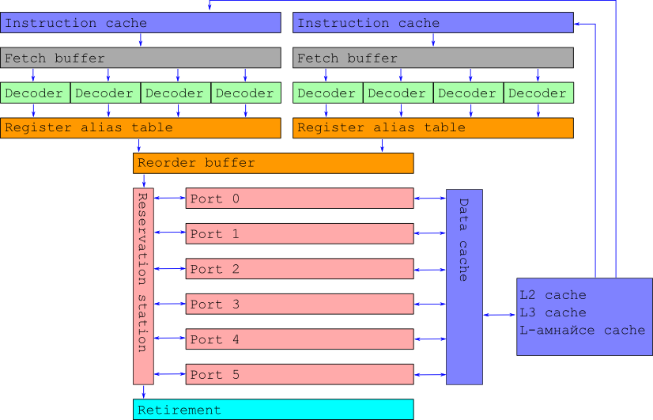

Как работи това в нашия pipeline?
XOR a,b: [F ][D1][D2][EX][WB]
XOR b,a: [F ][D1][PS][PS][D2][EX][WB]
XOR a,b: [F ][D1][PS][PS][PS][PS][D2][EX][WB]
cpu: цик цик цик цик цик цик цик цик цик цик цик
Stall се получава и когато инструкция трябва да чака
Pentium Христос - спасителя
ООО че яко. Out-of-order execution. 486 на стероиди

Хитро взимаме до 24 инструкции от instruction cache

Взимаме до 4 инструкции от fetch buffer
Разталпваме ги на µ-ops - парчета от инструкции

Подреждаме входа в регистри по 4 µ-ops на цикъл
Копираме ги в тайни регистри за паралелизъм

Преподреждаме µ-ops в подходящ ред за изпълнение

ООО Меджик. Изпълняваме µ-ops по ултрамегабърз начин
Заемаме максимално количество портове (execution units)

Изчакваме всички µ-ops за инструкция
Попълваме изхода в подходящия ред
ООО че яко
Решихме pipeline stall проблема!
За програмата и програмиста цялата тая магия изглежда не по-различна от дедо 8086
ООО че не чак толкова яко
Създадохме нов проблем
... когато имаме branching
... инвестираме прекалено много
Получаваме Pipeline stall с чудовищни размери
- Чакаме да приключат всички заредени инструкции
- Правим roll-back до предишно състояние
- Рестартираме целия pipeline на новото място
Когато имаме сто (или повече) инструкции, заредени в pipeline-a, това е неприемливо
Спекулативно изпълнение
Отговорът на нашия проблем
- При branch изпълняваме всичките му разклонения
- Когато разберем кое разклонение е правилното, изхвърляме резултатите от другото на боклука
- Да, има разхищение, но многократно по-малко
- Можем да поскажем на процесора кой branch да избере (__builtin_expect)
Бонус
Как работи Hyper-Threading?
